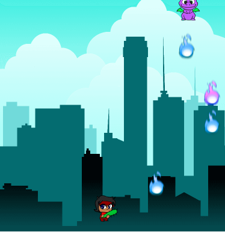
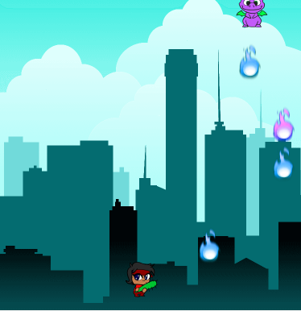

Football is my favourite hobby. It’s a team sport, in which you can score only by placing the ball inside the goal of the opposite team. Teams content 11 players – field players and a goalkeeper. The goalkeeper’s role is to protect the goal. He’s the only person that can touch the ball with his hands, but only in his penalty area. There are also 3 men which are not playing, these are the refferees. • Personally I play football for both training and fun. Many contacts with the ball improve the technique, and moving on the pitch builds the condition. Additionaly scoring a goal or blocking a dangerous shot is a really nice feeling, what makes football a good game for minimizing the stress. It’s good to have an onfield idol, that you can watch to improve your skills. My idol is Kaka’, because I love the way he dribbles and passes. • While playing, you must remember that football is a team game. Individual actions may be satisfying, but there’s more pleasure from the game when you remember about the teamwork. Moreover playing as a team is much more effective, and when there’s chemistry between the teammates, you can beat stronger or even more skilled oponents. Football is based on teamwork and that’s the best part of it in my opinion.
.png) 
